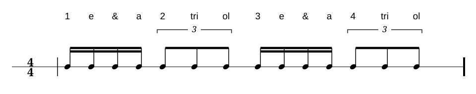
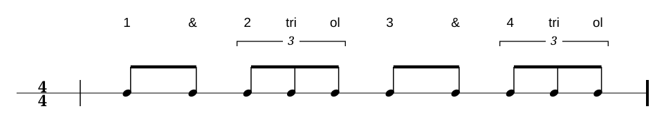
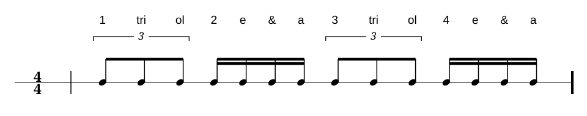
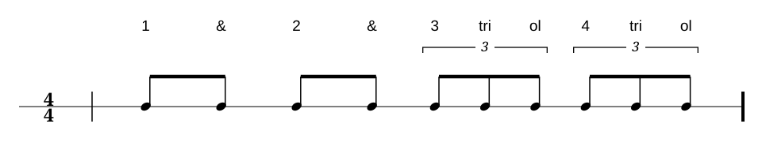
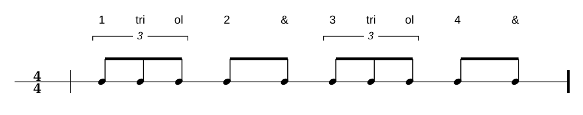
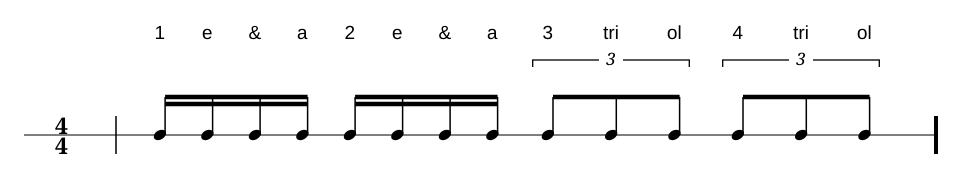
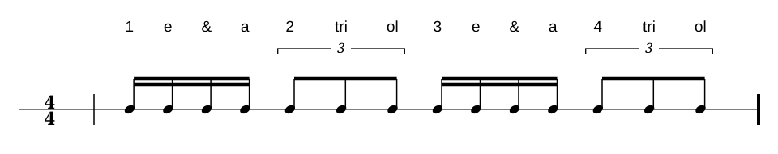
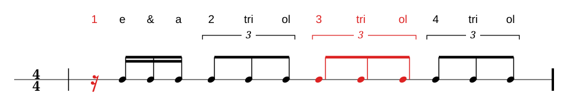
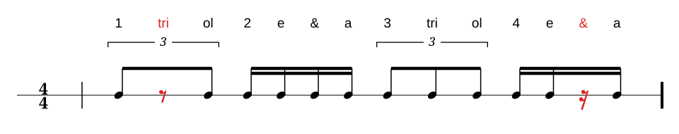
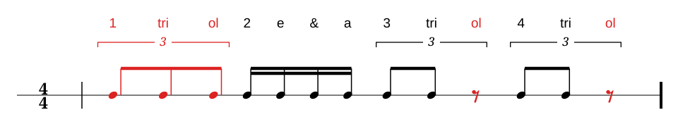

Lektion 01
Einführung
Sechzehntel teilen einen Viertelschlag in vier gleiche Teile; Achteltriolen teilen ihn in drei. Beide Raster liegen über demselben Viertelpuls.
Das lernst du.
Du wechselst zwischen „Zahl e und a“ und „Zahl tri ol“. Zähle beide Unterteilungen genau und halte den Viertelpuls gleichmäßig.
Der Puls bleibt gleich: Klopfe die Viertel mit dem Fuß und sprich die Unterteilungen laut mit.
Beispiel im 4/4-Takt
Die Notation zeigt, wie die Unterteilungen auf vier gleichmäßige Viertelschläge verteilt sind.

Audio · Beispiel im 4/4-Takt
Beispiel im 4/4-Takt in Google Drive öffnen ↗Lektion 02
Lesen
Lies die Unterteilungen laut, während du den Viertelpuls mit dem Fuß klopfst.
Leseübung 1

Audio · Leseübung 1
Leseübung 1 in Google Drive öffnen ↗Leseübung 2

Audio · Leseübung 2
Leseübung 2 in Google Drive öffnen ↗Leseübung 3

Audio · Leseübung 3
Leseübung 3 in Google Drive öffnen ↗Lektion 03
Hören
Höre auf den Wechsel der Unterteilungen und zähle den Viertelpuls weiter.
Höraufgabe 1
Audio · Höraufgabe 1
Höraufgabe 1 in Google Drive öffnen ↗Höraufgabe 2

Audio · Höraufgabe 2
Höraufgabe 2 in Google Drive öffnen ↗Höraufgabe 3

Audio · Höraufgabe 3
Höraufgabe 3 in Google Drive öffnen ↗Lektion 04
Fehler finden
Vergleiche die gehörte Aufnahme mit der notierten Unterteilung.
Fehler finden 1

Audio · Fehler finden 1
Fehler finden 1 in Google Drive öffnen ↗Lösungshilfe
Auf der ersten Sechzehntelposition von Schlag 1 ist eine Pause zu hören. Auf Schlag 3 erklingt eine Triole statt der notierten Sechzehntel.

Fehler finden 2
Audio · Fehler finden 2
Fehler finden 2 in Google Drive öffnen ↗Lösungshilfe
Auf „tri“ von Schlag 1 ist eine Pause zu hören. Auf Schlag 4-und liegt eine Sechzehntelpause.

Fehler finden 3
Audio · Fehler finden 3
Fehler finden 3 in Google Drive öffnen ↗Lösungshilfe
Auf Schlag 1 ist eine Triole statt der notierten Sechzehntel zu hören. Auf „ol“ der Triolen auf Schlag 3 und 4 ist jeweils eine Pause zu hören.

Lektion 05
Selber schreiben und spielen
Schreibe eigene Takte mit den Unterteilungen dieses Kapitels und spiele sie bei gleichmäßigem Puls.
Schreib- und Spielaufgaben folgen.